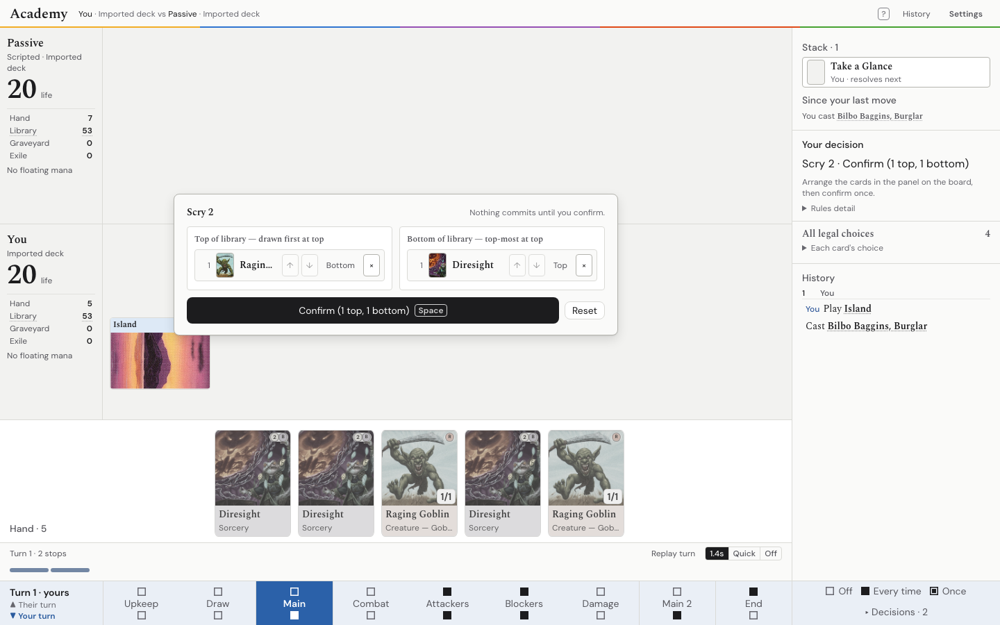
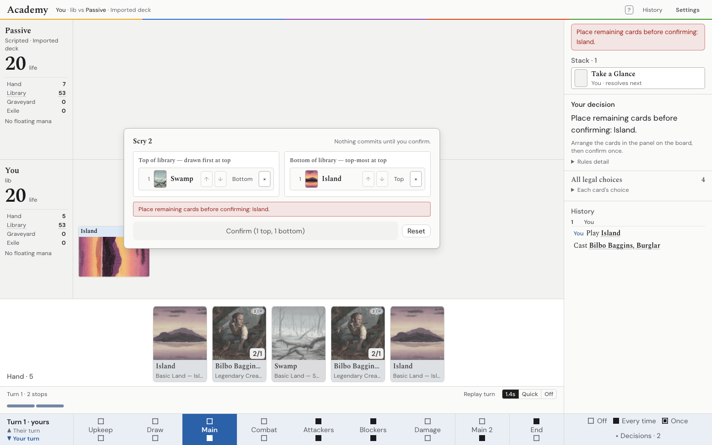
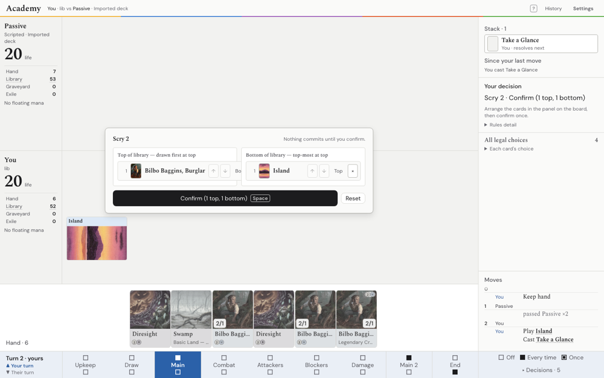

Env decision API and Academy againNative extension already matched the Rust at bf6209ae7c (no .rs newer than the .so); rebuilt the static SPA. Drove the Python API as a library user would, then four live Academy games in headless Chromium with every WebSocket frame logged. Scripts and logs: .runs/qa4/.
env.decision() / preview / submitGoblins vs Plains, skip_trivial=True, four attack decisions with 1–5 goblins.
declare_attacker offer, decision() is still declare_attackers with committed=[{entity:129}] and the other two goblins in declarable; previewing the rest is complete; submitting it finishes the declaration. Including the already-committed goblin in the choice is refused ("can only attack once").submit of a duplicate attacker list raised AgentError: decision refused: Raging Goblin can only attack once. and decision() afterwards had the same address. A valid submit returns (Observation, float, bool, bool, dict); resubmitting the old address raises "stale or unauthorized decision".preview(True) → TypeError; preview(-1) → ValueError; offer id 9999 → refused "Offer 9999 is not legal here."; a bare int in attackers → pydantic error; a ScryChoice at an attack → "choice kind does not match active decision"; revision+5 or the other viewer → "stale or unauthorized decision". A plain dict choice is accepted.kept in the outcome; a partial OrderLibraryChoice previews complete=False, refused=None.compound_offers() and structured_offers() warn DeprecationWarning … removed in 0.3.0; use Env.decision / Env.preview / Env.submit. env.step(int) still takes one flat step.Offer.label is often the native ActionType name (PriorityPlayLand, PriorityCastSpell, DeclareAttacker, SelectCard, PayCost) and source was None on every offer seen. Two "DeclareAttacker" offers can't be told apart without the observation. Same on main (structured_offer.rs:644 falls back to format!("{:?}", action_type)), and the label feeds the decision fingerprint, so changing it here would move retained fingerprints. Grouped kinds carry readable labels; this only affects SingleDecision and raw offers. Filed in questions.md.Every Confirm sent exactly one group_command and nothing else (24/24). Scry and OrderLibrary open with Confirm disabled ("Place 2 more cards" / "Order 2 more cards") and stay disabled with one card placed; Surveil opens enabled as "Keep all 2 on top".

Four attacks of 1–2 hasty goblins: one group_command each, Passive 20 → 13.

Re-ran the Pass 1 edge script: the raw per-card offer sends one ordinary command and the panel gives way at one card; keyboard drafting works; a reload right after Confirm leaves the game past the Scry with no pending submission. In both recordings each group's steps authority.group.<id>.0/.1 appear exactly once in canonical_replay.decisions.
Rewrote one outgoing group_command in flight (routeWebSocket) to drop the bottom card. The server answered rejected. The panel and rail show "Place remaining cards before confirming: Island.", and the game stays at the Scry with the draft intact. Confirm stays disabled until the draft is edited. After moving Island to top and back, Confirm re-enabled and the plan applied in one message.

Small, cosmetic: after the edit re-enables Confirm, the rail's red rejection banner is still shown until the next frame.
Works: the unified Python surface answers Jack's half-way question directly, refuses atomically, and rejects stale addresses. Academy library and combat Confirms are one message each. Recording, reload and the raw-offer path work, and a rejected plan leaves the game untouched and can be recovered.
Not reached: blocker groups live (Passive never attacks; covered by tests/academy/test_group_command.py and the e2e fixture), Replay UI this pass (UI unchanged since Pass 1's check; the recording shape was re-verified), opening retained pre-change traces (experience-v1 is unchanged; frame-hash parity is enforced by tests).
Still wrong, worst first: (1) raw Offer.label/source are unreadable for Python callers on SingleDecision (existing, not introduced here); (2) the rail's rejection banner lingers after the draft is edited (cosmetic).
Rebuilt native extension (release, from this branch's Rust) and static SPA; launched managym academy play with imported decks against Passive, driven by Playwright with every outgoing WebSocket frame logged. Recordings read from play.sqlite.
Deck 7 Mountain / 7 Island / 7 Swamp / 16 Raging Goblin / 12 Bilbo / 11 Diresight vs 60 Plains. Seven attacks of 1–4 goblins, each drafted by clicking creatures then the primary. Each Confirm sent exactly one group_command (e.g. four attackers) and nothing else; damage landed (Passive 20 → −1).

Seen: with a goblin cast this turn, the counter reads "3 of 3 Raging Goblin" beside "Attack with 4" because the new goblin is its own pile. The pile logic is the same on main, so this change did not cause it.
Panel opens with both cards unplaced and Confirm disabled ("Place 2 more cards"); still disabled after one card is placed; enabled as "Confirm (1 top, 1 bottom)". One group_command per Confirm. The next Surveil revealed exactly the card the previous Scry had put on top (entity 86).
Fixed: a placed row with a long name ("Bilbo Baggins, Burglar") overflowed its bucket. The Bottom button was clipped to "Bo" and × was hidden. The cause was flex/grid items keeping min-width:auto, so the ellipsis never engaged. Fix: min-width:0 on .card-row and .card-name in ArrangePanel.svelte. Measured after the fix: every row button sits inside its bucket at 1440 and 1024 px.
Before / after:


Diresight: Surveil starts as "Keep all 2 on top" (enabled). Confirm sent one surveil plan with an empty graveyard. The OrderLibrary panel followed as its own group ("Order 2 more cards", disabled until both were ordered, then "Confirm top order"), and its Confirm sent one order_library. A second Surveil with one card moved to the graveyard read "Put 1 in graveyard, keep 1 on top".


canonical_replay.decisions holds one row per native step: authority.group.<id>.0 "Keep Bilbo on top", .1 "Put Island on the bottom". In Replay these are two SCRY decisions showing raw offers with the chosen one checked; Replay has no arrange panel and no disclosure.

academy.table.group-draft).command. With one card left (below the 2-card threshold) the panel gave way to the raw offers, and the game finished normally.group_command went out, then a resume. After the reload the game was past the Scry, no submission was pending, and the recording holds the group's two steps exactly once.Works: attack drafts, Scry, Surveil and OrderLibrary each confirm as one message. Recording, Replay, reload and the raw-offer path all behave as planned.
Not reached: blocker groups (Passive never attacks; the e2e fixture covers them), watcher/TransferPilot delivery and refused plans in a live game (covered by tests/academy/test_group_command.py), and Bottom-end OrderLibrary (no card in these decks).
Still wrong, worst first: none introduced by this change. Two existing, cosmetic issues: the pile counter next to a fresh creature, and the panel shifting up as it shrinks while cards are placed (it is vertically centred).